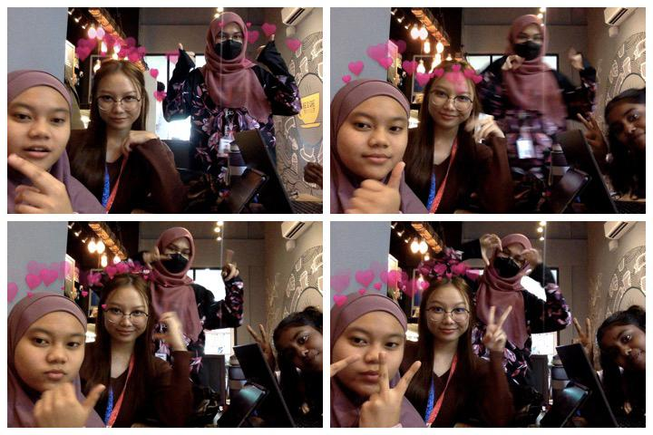
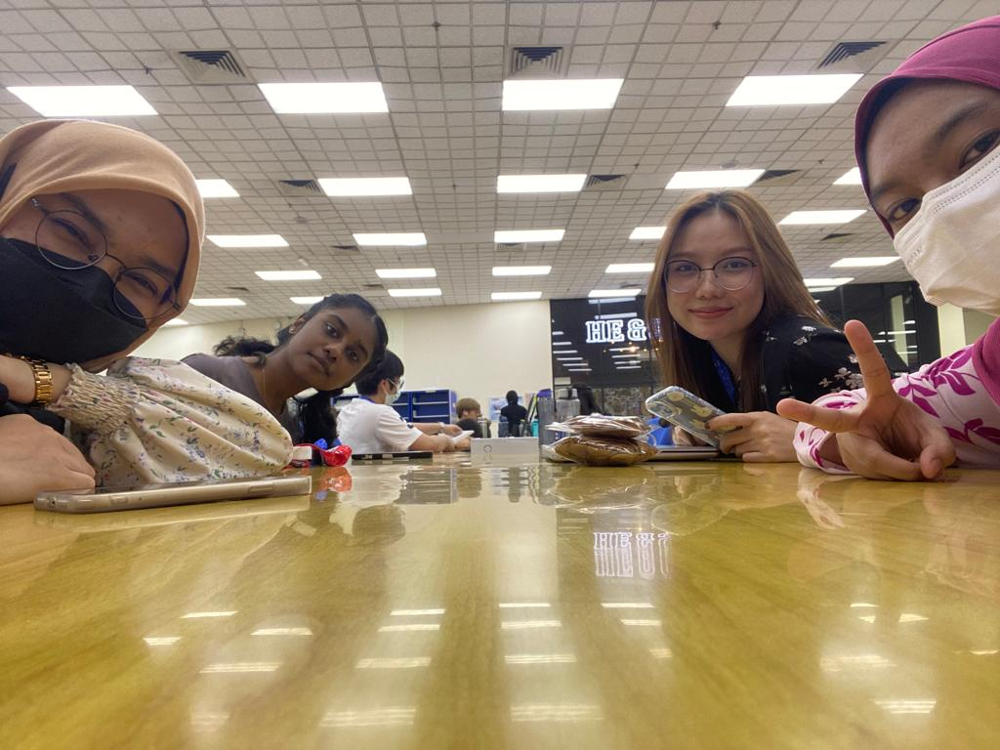
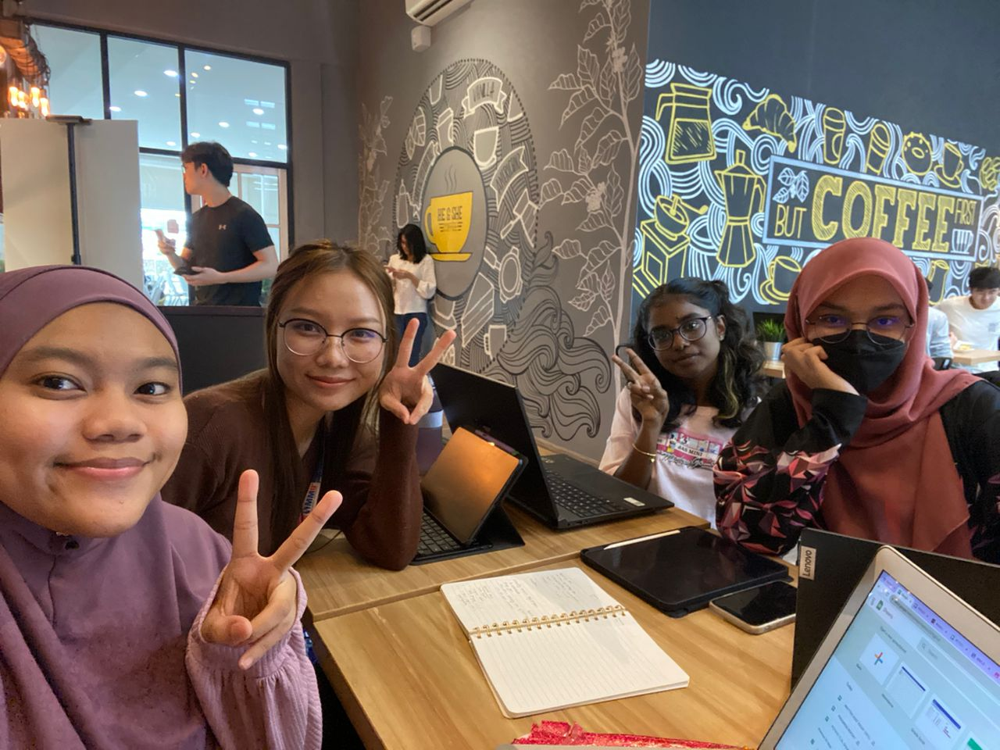
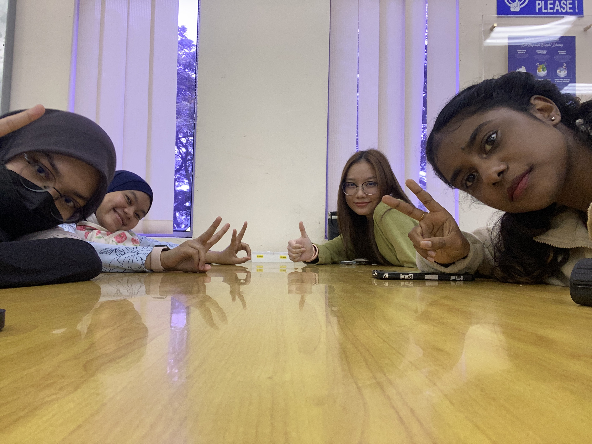

| WEEK | ACTIVITIES | PHOTOS |
|---|---|---|
| Week 1 & 2 | - Everyone gathered at He & She Coffee to decide our case study topic.
- Begun to write and submitted the proposal to our tutor. |
 |
| Week 3 | - Proceeded with roleplay and assigned each member to be a certain character in the short video roleplay.
- Planned the story board and discussed about the project of building 6-page website on 23/8. Everyone gathered at SHL library to continue discussed about the project of building 6-page website. - Everyone gathered at the SHL to continue our discussion on roleplay and begun shooting each scene on the story board Each one of us were the directors. - Tara was the main character with three off the members as her colleagues while Jasmyne was assigned be cameraman.Aniqah and Aleez did the video editing. |
 |
| Week 4 & 5 | - Everyone gathered at SHL for the final shooting session and went to final shooting spot.
- While setting up, we managed to interview two random people to test their speed typing. |
 |
| Week 6 & 7 | - Polishing and improving our website with the consult of our laboratory lecturer before final submission. |  |